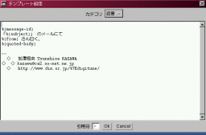

テンプレート設定ウィンドウ

引用方法やシグネチャなどをあらかじめ設定しておくためなどに利用可能な、テンプレートを設定するためのダイアログです。テンプレートはアカウントごとに独立しています。
-
カテゴリ選択チョイス
-
「新規」「返信」「転送」の3種類が選択できます。それぞれ「メール」メニューの「新規メールを作成」「返信メールを作成」「転送メールを作成」に対応していて、それぞれの動作を行う時に利用されるテンプレートを設定できます。
-
テンプレート入力エリア
-
実際のテンプレートを入力する部分です。基本的にはここに入力した文字がそのままメール送信ウィンドウのボディ部にあらかじめセットされるわけですが、「返信」用テンプレートと「転送」用テンプレートではそれぞれ対象となる元メールのヘッダや本文を引用できるようになっています。ヘッダを引用する場合は引用したいヘッダ名を「%{ヘッダ名}」のようにくくって、挿入したい部分に記述してください。また本文を引用する場合は「%{body}」または「%{quoted-body}」を挿入したい部分に記述してください。「quoted〜」の方では、行頭に次に説明する引用記号が挿入された形で置き換えられます。
-
引用記号入力フィールド
-
「quoted-body」での置き換えの際、行頭に追加される引用記号を指定します。
戻る